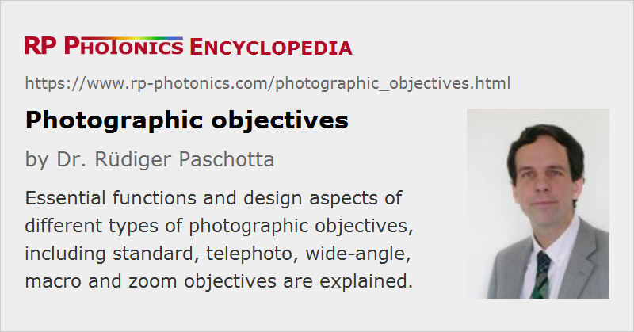

Photographic Objectives
Definition: objective lenses used for photography
Alternative term: photo objectives
More general terms: objectives
German: photographische Objektive
Categories: photonic devices, vision, displays and imaging
How to cite the article; suggest additional literature
Author: Dr. Rüdiger Paschotta
The function of a photographic objective is to image light from more or less distant objects to some image plane, where either a photographic film or an electronic image sensor is placed. In some particularly simple cases with low quality requirements, an objective contains only a single optical lens, but in most cases it is a multiple-lens system, containing some number of lenses and one or more optical apertures. Even multi-lens objectives are often called photographic lenses. In a few cases (e.g. of some tele objectives), they also contain mirrors.
Important Parameters of Photographic Objectives
For proper selection and use of a photographic objective, substantial expertise is required, which to some significant extent includes aspects of optics. The following sections explain the importance of various key parameters and typical trade-offs involved in the design of objectives.
Focal Length
A fundamentally important parameter is the focal length of an objective. Unfortunately, there is considerable confusion in this area due to different definitions of focal length. In addition, many documents found in the Internet, for example, contain statements which are wrong or at least misleading.
If an objective would simply consist of a single lens (which it hardly ever does), the definition of focal length would be quite obvious and not ambiguous (Figure 1). However, objectives are usually multiple-element lens systems, where is not obvious how the focal length should be defined, and different quantities can be relevant for applications.
As explained in the article on focal length, a common definition of the focal length of an extended system is the distance between focal plane and principal plane. That definition is most appropriate for calculations, but the positions of the principal planes are often not known by a user. Therefore, the back focal length (or back focal distance), for example, is sometimes defined as the distance between the output position of the objective (e.g. the last lens or the housing) and the image plane for collimated light at the input (e.g. from a very distant object). That quantity, however, does not fully describe the optical function; one would better use a different term like focal distance.
Further confusion can arise from the fact that some manufacturers particularly of digital cameras decided to specify a kind of effective focal length which is larger than the actual focal length, such that the field of view achieved with a smaller image sensor is similar to that of a conventional photo camera with larger sensor or film. Unfortunately, it is often not even clear whether the actual focal length or an increased effective value is meant.
Field of View
As explained in the article on imaging with a lens, the angular field of view of a camera is determined by the focal length in conjunction with the sensor size, typically taking its diagonal.

The field of view in radians is approximately the sensor diameter divided by the focal length; for obtaining a value in degrees, one has to multiply that with 180° / π. For wide angle cameras, one has to use a more accurate formula:
where w is the sensor width (or diagonal).
Objectives are often classified according to their field of view; see the later section on types of photographic objectives.
Aperture Range and Light Gathering Power
Most objectives contain a diaphragm (an optical aperture) of variable diameter, which however is usually indicated indirectly through the f-number, which is the ratio of focal length and entrance pupil diameter. Note that large f-numbers correspond to small aperture diameters, which however also depend on the focal length.
Normally, the f-number can be changed in certain steps, with typical values like 2.8, 4, 5.6, 8, 11 and 16, progressing roughly such that each step (“going up one stop”) reduces the aperture area and therefore the light throughput by a factor of 2. Apart from the light gathering power, the aperture also influences the depth of field (see below).
Some objectives offer only relatively large f-number values, because image aberrations could not be properly compensated for lower values. Unfortunately, that limits their light gathering power, which for distant objects is determined by the f-number. Particularly for close objects, the light gathering power can be reduced substantially. That aspect is relevant for macro photography, where exposure times have to be increased accordingly.
Distance Range and Depth of Field
Perfect focusing of images is possible only for one particular object distance, which is usually set via fine adjustment of the distance between objective optics and image sensor. Essentially all photographic objectives have a focus adjustment, which must either be made manually or automatically (autofocus). Autofocus features can be integrated into objectives, which then require an additional electrical connection to the camera body. Unfortunately, that aspect can limit the compatibility of devices.
For a particular setting of the focus, there is a range of distances for which the focusing is not perfect, but still good enough – for example, with the image quality still being limited by other aspects such as the sensor resolution, or at least satisfactory for some application. The width of that range is called the depth of field. It should not be confused with the depth of focus, which is the corresponding quality of the image side, defining the tolerance for the positioning of the image sensor.
As explained in the article on imaging with a lens, the depth of field is not just a quality of the objective, but depends on various factors such as the focal length, the focusing distance and the aperture size. Small values of the depth of field result from using an objective with a long focal length and a wide open aperture (small f-number).
There is a lower limit to the distance to which an objective can be focused. That limit is essentially set by the available dioptric power; higher dioptric powers (shorter focal lengths) are required for shorter distances. However, the issue of image correction for divergent light coming from a close object may also play a role.
There is usually no upper limit to the distance; most objectives can be “focused to infinity”, i.e., to very distant objects. The hyperfocal distance is defined as the distance beyond which acceptable focusing is achieved for all objects without further focus adjustment; it results in the largest possible depth of field.
Types of Photographic Objectives
Simple cameras (see Figure 2) have a built-in objective which cannot be exchanged (except perhaps during repair). It is usually a standard objective with a field of view of the order of 50°.
Higher-grade cameras usually have mechanical means for using different models of photographic objectives.
The following sections describe typical types of objectives.
Standard Objectives
Standard objectives are made such that the field of view is of the order of 50°, i.e., similar to that of the human eye (for looking into a fixed direction). That implies that the focal length is similar to the diagonal size of the image sensor or film. For example, a 40-mm, 50-mm or 55-mm lens may be used in conjunction to a full size image sensor with 36 mm × 24 mm. For digital cameras with smaller image sensors, correspondingly shorter focal lengths are required, e.g. 15 mm for a Minox format of 11 mm × 8 mm. As already mentioned above, some manufacturers specify an “effective” focal length (without always clearly indicating that) which would be used if the image sensor had the full standard size.
For portrait photography, the use of an objective with a somewhat longer focal length is often preferred, because it tentatively leads to a more pleasing perspective, and the reduced depth of field can be beneficial for nicely framing faces.
Macro Objectives
Macro objectives (sometimes called micro objectives) are optimized for the photography of rather small objects such as flowers, insects or miniature machine parts. Although one might expect that such objectives would always have a very small focal length – just the opposite of what is used for long distance photography – this is not the case; one does not take the same approach as with a microscope. Instead, a substantial focal length of at least some tens of millimeters, sometimes even well above 100 mm, is often used, particularly if a large working distance is important (for example for insects, which might be disturbed with a closer approach). The difference to standard and long-focus objectives is that macro objectives are used with a larger distance between lenses and image plane and optimized for handling relatively divergent light coming from small objects – while a telephoto objective needs to handle only nearly parallel light.
Instead of a dedicated macro objective, one sometimes uses a simple extension tube not containing optics, or sometimes with a single lens, to be mounted between the camera body and a standard objective. This allows one to focus to closer distances, resolving smaller objects with larger magnification (Figure 5), if a relatively small working distance is acceptable. However, the performance of a standard objective may not be ideal under such conditions, because its compensation is not optimized for that operation mode. There are also close-up lenses which can be mounted at the front size of a standard objective, also allowing one to focus to shorter distances.
Another option is to use a standard objective in reverse in combination with an additional lens having a greater focal length, using a macro coupler. Reversing the standard objective makes sense because it is optimized for larger divergence on what is normally the image side.
Particularly for macro photography with larger working distances, dedicated macro objectives are required.
Wide Angle Objectives
Wide angle objectives are understood to be those with an angular field of view of at least 55°. This can be useful when more of a scene needs to be captured, and it is not possible to simply use a larger observation distance – for example, for photography in rooms as done by architects.
The used objective does not only need to have a short focal length, but must be optimized for capturing images for wide angles, avoiding excessive image distortions. The larger the field of view, the more difficult it becomes to satisfy that. In extreme cases with viewing angles of the order of 180°, so-called fish eye objectives produce substantial geometric image distortions.
Long-focus and Telephoto Objectives
For taking images of distant objects, one often prefers an objective with a reduced field of view, so that a larger magnification is achieved: the given number of pixels of the image sensor then corresponds to a smaller area on the object scene. For that purpose, a photographic objectives must have a long focal length. Therefore, such objectives are called long-focus objectives, with the field of view being about 20° or smaller.
For a standard sensor format of 36 mm × 24 mm, for example, a 10° field of view, calculated for the image diagonal, requires an objective with a focal length of 123 mm. Particularly for even much smaller values of the field of view, it becomes highly desirable that the physical length of the objective is substantially less than its focal length. That would not be possible with a single lens, but there are lens systems fulfilling that condition, containing a telephoto group and called telephoto objectives (or simply tele objectives) – not to be confused with telecentric objectives. Based on this design approach, even super telephoto lenses can be made which have a field of view of only a few degrees, in extreme cases even less than 1°. Some designs are based on curved mirrors (for a primary objective) in addition to lenses. Mirrors allow for folding of the beam path. Despite such techniques, telephoto lenses are typically longer than standard objectives.
Non-telephoto designs can have a simpler setup, e.g. containing only one lens doublet for achieving achromatic properties. However, they are practical only for not too small field of view.
Diffraction becomes important for instruments with narrow field of view, where the angular resolution needs to be rather high. Therefore, relatively large aperture diameters are required for long-focus objectives. Fortunately, this is not difficult to achieve for instruments working only with a narrow angular range.
The high angular resolution also implies that the camera should be very stable during exposure. One often needs to properly mount the camera to keep it stable, e.g. on a tripod.
Zooming
While some objectives work with a fixed focal length (prime lenses), there are also objectives where the focal length can be adjusted in a certain range, typically by manually rotating some part of the objective. Ideally, the design is made such that the focus adjustment is not affected by changes of the focal length; it is then a zoom objective. Zoom features are available for various types of objectives, such as standard, telephoto or wide angle objectives.
Zooming requires the mechanical movements of optical parts with fine mechanics. For modifying the focal length while keeping the image plane location unchanged, one generally needs to implement two different movements, which of course need to be precisely synchronized. However, there are also designs where only a single lens or a fixed group of lenses needs to be moved; the focusing may then not be perfect over the full range. Particularly if an autofocus system can correct that problem, it may not be relevant in practice.
Besides keeping the focus, a design challenge is to obtain optimal compensation of various kinds of aberrations for all zoom settings. That involves some inevitable compromises, which lead to particularly apparent beam quality degradations for low-cost zoom objectives with large zoom range.
Design of Photographic Objectives
The discussion of the manifold important parameters for the functioning of a photographic objective has probably made it clear that the design of such optical instruments is a highly sophisticated task. There is a large number of design goals, and many changes of design can affect all of them. After the invention of the first photo cameras, it therefore took decades to develop improved types of objectives, providing substantially improved performance. Although a very high level has already been reached, this development is still ongoing.
New developments profit from still further refined design methods, implemented with advanced optics design software, but also from the availability of improved hardware. For example, fabrication methods for aspheric optics have been improved, so that these are now more widely used for photographic objectives. With them, high performance can often be achieved with a significantly lower number of optical components. Another important development is that of plastic optics, which is now also widely used – partially in combination with conventional glass lenses.
Additional Practical Aspects
Mounting of Objectives; Using Additional Optics
The used mounting mechanisms for objectives partially allow the use of objectives from other manufacturers. For example, there are C-mounts for sensor sizes up to 1.2 inches and larger mounts of F or M42 type. Also, there are adapters, e.g. for C-mount to M42.
Such compatibility can be highly desirable when moving to a new camera model of a different manufacturer, trying to still use the expensive old objectives. Difficulties with compatibilities can arise particularly when electrical connections are also needed, for example for autofocus functions. Note, however, that full compatibility also includes optimal optical functionality, which may not be given if same optical parameters deviate. For example, an objective may not be working well in conjunction with a larger image sensor.
As mentioned above, for some applications it is good to have options for combining objectives with additional optics, such as extension tubes and close-up lenses. Similarly, one might want to attach optical filters or polarizers.
Communication With the Camera Body
For certain purposes, it is useful if an objective can communicate with the microprocessor in the camera body. Some examples:
- For exposure time control, the computer should know what aperture the user has selected (open-aperture metering).
- When using different objectives, the computer may learn which objective is currently mounted.
- Further communication may be needed for autofocus control.
Unfortunately, such aspects can greatly limit the compatibility of objectives with cameras from different manufacturers.
Suppliers
The RP Photonics Buyer's Guide contains 8 suppliers for photographic objectives.
Questions and Comments from Users
Here you can submit questions and comments. As far as they get accepted by the author, they will appear above this paragraph together with the author’s answer. The author will decide on acceptance based on certain criteria. Essentially, the issue must be of sufficiently broad interest.
Please do not enter personal data here; we would otherwise delete it soon. (See also our privacy declaration.) If you wish to receive personal feedback or consultancy from the author, please contact him e.g. via e-mail.
By submitting the information, you give your consent to the potential publication of your inputs on our website according to our rules. (If you later retract your consent, we will delete those inputs.) As your inputs are first reviewed by the author, they may be published with some delay.
See also: objectives, photo cameras, optical aberrations, f-number, field of view, depth of field
and other articles in the categories photonic devices, vision, displays and imaging
|  |
If you like this page, please share the link with your friends and colleagues, e.g. via social media:
These sharing buttons are implemented in a privacy-friendly way!